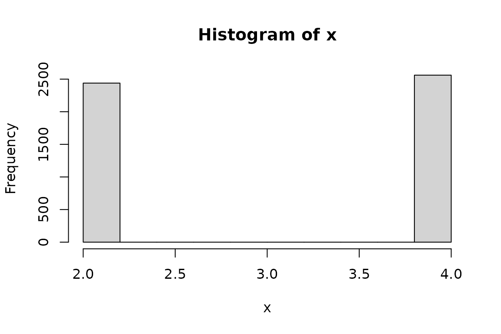

Generate random numbers
from a distribution of 0 or 1,
rescaled to have user-specified
population mean and standard
deviation.
Usage
rbinary_rs(n = 10, p1 = 0.5, pmean = 0, psd = 1)
Arguments
- n
The number of random numbers
to generate.
- p1
The probability of being
1, before rescaling.
- pmean
Population mean.
- psd
Population standard
deviation.
Value
A vector of the generated
random numbers.
Details
First, specify probability of 1
(p1), and the desired population
mean and standard deviation. The
random numbers, drawn from a
distribution of 0 (1 - p1
probability) and 1 (p1
probability), will then be rescaled
with the desired population mean and
standard.
Examples
set.seed(90870962)
x <- rbinary_rs(n = 5000,
p1 = .5,
pmean = 3,
psd = 1)
mean(x)
#> [1] 3.0244
sd(x)
#> [1] 0.9998023
hist(x)
